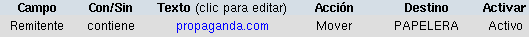

|
Un filtro es una configuración que decide el destino de ciertos mensajes en función de algún criterio determinado. La clave para configurar un filtro es identificar un criterio que distinga a cierto tipo de mensajes del resto. Una vez hecho esto, se dispone que a los mensajes que coincidan con dicho criterio se les realice determinada acción.
Para configurar un filtro, haga un clic en el botón "Filtros de Mensajes" (
 ), y será redirigido a la página de configuración de filtros. Notará allí que ya existen varios filtros definidos que no son editables. Dichos filtros han sido colocados por el administrador de su sistema y en general identifican virus conocidos. ), y será redirigido a la página de configuración de filtros. Notará allí que ya existen varios filtros definidos que no son editables. Dichos filtros han sido colocados por el administrador de su sistema y en general identifican virus conocidos.
Sin embargo, usted puede definir sus propios filtros, editarlos o eliminarlos.
Como puede ver, los filtros existentes son poco claros. Por ejemplo, verá un filtro que envía a la Papelera los mensajes cuyo "Asunto" contenga el texto \s{40,}\[[a-z0-9]{5}\]$. Este es un filtro especial que utiliza
expresiones regulares
para bloquear varios textos diferentes. En este caso bloquea cualquier mensaje cuyo asunto contenga 40 o menos caracteres en minúsculas y 5 o menos caracteres alfanuméricos. Sin embargo, en vez de entrar en detalles complejos, este tutorial explicará los conceptos básicos de la configuración de filtros.
Use la siguiente table como una referencia para los filtros de mensajes:
| Término |
Acción o significado |
| Prioridad | Prioridad de esta regla. Define el orden en que se aplicarán los filtros (los menores se aplicarán primero) |
| Campo | Campo del mensaje en donde se buscará el texto |
| Con/Sin | Incluyendo o excluyendo el texto (ver siguiente) |
| Texto | Texto a buscar en el campo correspondiente |
| Acción | Acción a realizar sobre el mensaje coincidente con el criterio especificado |
| Destino | Ubicación donde se depositará el mensaje |
| Activar | Seleccionar para que el filtro esté activo (en uso) |
A continuación veremos un ejemplo:

Translating this filter into plain English would be:
Move all e-mail that is from anyone who resides on bad-website.com to the Trash. This filter is enabled. Therefore, if someone who's e-mail address was bob@bad-website.com tried to send you an e-mail, it would be automatically sent to the Trash.
You could also have an exclusive filter, by blocking anyone who does not reside on a certain server. For example, if you changed include to exclude, you would be allowing e-mail from only those at bad-website.com.
To edit a filter, simply click the string of the filter, and it will display on the editor at the top. see the above chart for details on filter editing.
If you would like to temporarily disable a filter, there is an easier way than deleting it and having to create it all over again. Simply follow the instructions in the above paragraph to edit the filter, uncheck Enable, then click Add/Modify, and the filter will no longer be in place. It will store it in a second chart above the preset filters. To enable the filter again, you can either edit the newly created filter in the second chart and check off Enable, then click Add/Modify; or you can delete the newly created filter by clicking Delete to absolute right of the filter you wish to delete.
|